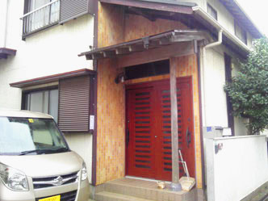

日本ペットシッター協会認定のペットシッター士です。

2014年 ペットシッター士の資格を取得
2015年 日本ペットシッター協会入会 登録番号第5646号
船橋市在住です。住所は金杉7-34-2
2015年6月、流山市から転居してきました。
こうめのおかげでご近所にもお知り合いがたくさんできました。
2014年 ペットシッター士の資格を取得
2015年 日本ペットシッター協会入会 登録番号第5646号
船橋市在住です。住所は金杉7-34-2
2015年6月、流山市から転居してきました。
こうめのおかげでご近所にもお知り合いがたくさんできました。
元来の動物好きで、小さな頃、捨てられていた子犬を拾って帰ってきたこともありました。残念ながらその時は飼うことができませんでしたが、子供のころは小鳥を飼っていました。小学校の生き物係ではウサギのお世話をしたこともあります。結婚して子供がまだ小さい時、生まれて間もない子猫「なな」が我が家に拾われてきました。そして、昨年の3月に亡くなるまで18年間、私の良き相棒でした。
その後、ペットシッター士の資格を取り、半年間ペットシッターのアルバイトをしました。大型犬を中心にワンちゃんや猫ちゃんのお世話をしてきました。
2015年9月、開業。
現在はコーギー犬「こうめ」が相棒であり生きがいになっています。
2014年 ペットシッター士の資格を取得
動物取扱業の認可が下りた日、動物愛護指導センターでこうめを譲り受けました。
後ろ足が不自由ですがとても人懐っこいので、みんなに頭をなでてもらっていつもご機嫌です。
こうめとの日常をブログ「ペットシッターのこうめ日記」に綴っています。ＮＴペットサービスのお客様ペットも続々と登場しています。ぜひお気軽にお立ち寄りください。
| 第一種動物取扱業者標識 | |
|---|---|
| 氏名又は名称 | 城内 良江 |
| 事業所の名称 | NTペットサービス |
| 事業所の所在地 | 千葉県船橋市金杉7-34-2 |
| 第一種動物取扱業の種別 | 保管 |
| 登録番号 | 第15-2-3号 |
| 登録年月日 | 平成27年7月17日 |
| 有効期間の末日 | 平成32年7月16日 |